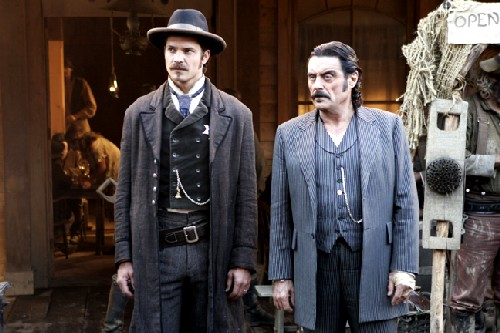
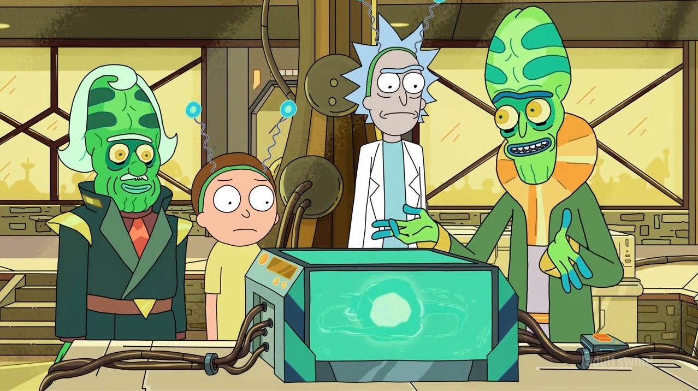
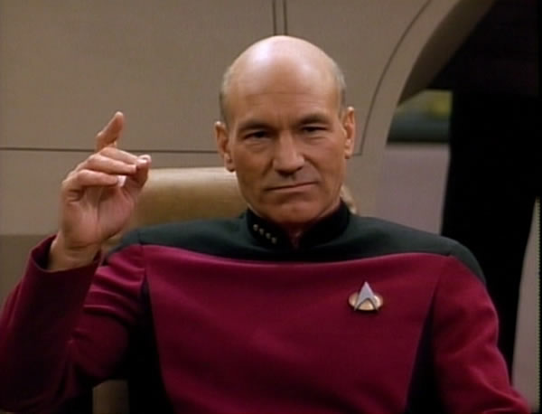

Select your vacation destination by completing the guantlet below!
How much do you love your favorite characters?
All of my weddings are red!
They are my precious!
We are Hang Dai!
As long as it is not Jerry!
They will always be my number one!
At what age do protagonists hit their swagger?
Are you a Jerry?
Yes
No
What is your spirit animal?
Do you agree with Friedrich Nietzsche that the advent of modern rationalist thought has displaced our traditional value system and has created an existential void of meaning?
Lack of existing moral framework has not resulted in existential pessimism but in pragmatism. Rational thought has allowed the development of new and more complex norms.
Morality is distinct from societal norms and are by nature universal. They will persist regardless of the enlightenment.
Our new values are extensions of a long standing political discursive space. Overarching societal changes represent a shift in the biopolitical structure of the powerful not a redefinition of morality.
Nietchze is correct and existing morality structures are fables we have been taught. Intellectual enlightment is not rooted in science but our ability to understand the limitations of morality.
Learn your dream vacation
Welcome to Westeros!
Welcome to Mordor!
Welcome to Deadwood!

Welcome to Rick's Car Battery!

Welcome to the Enterprise!
